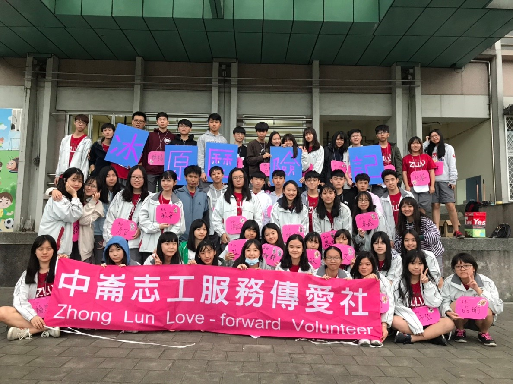
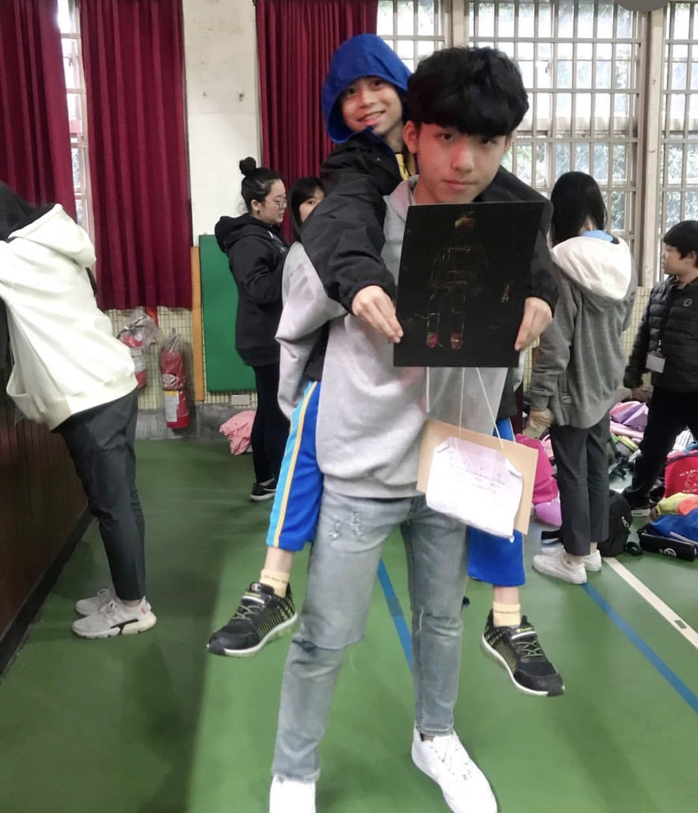
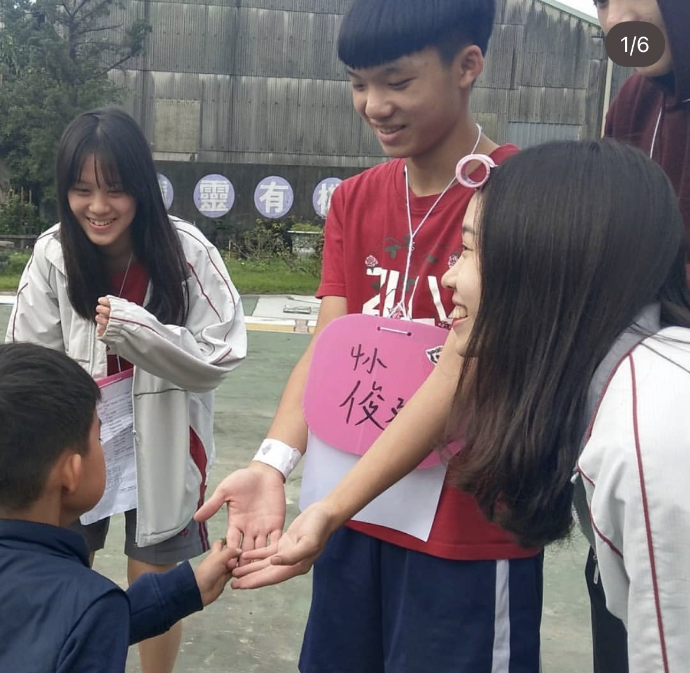
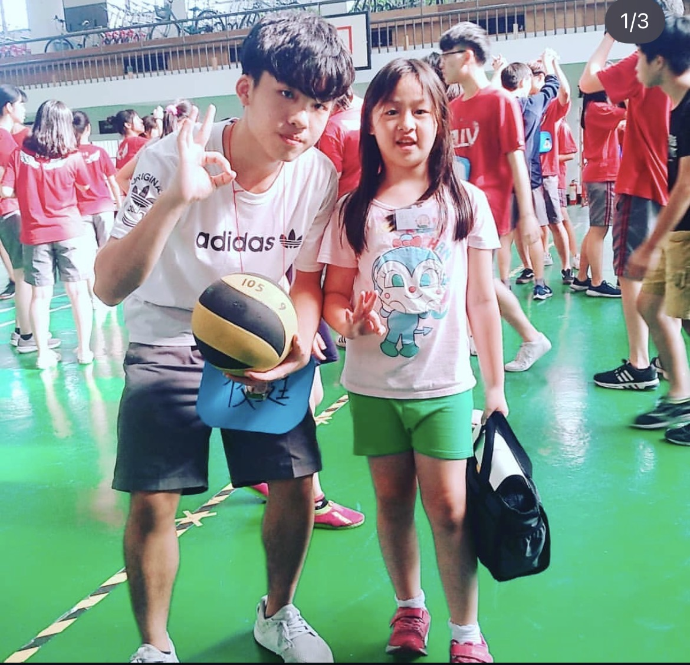
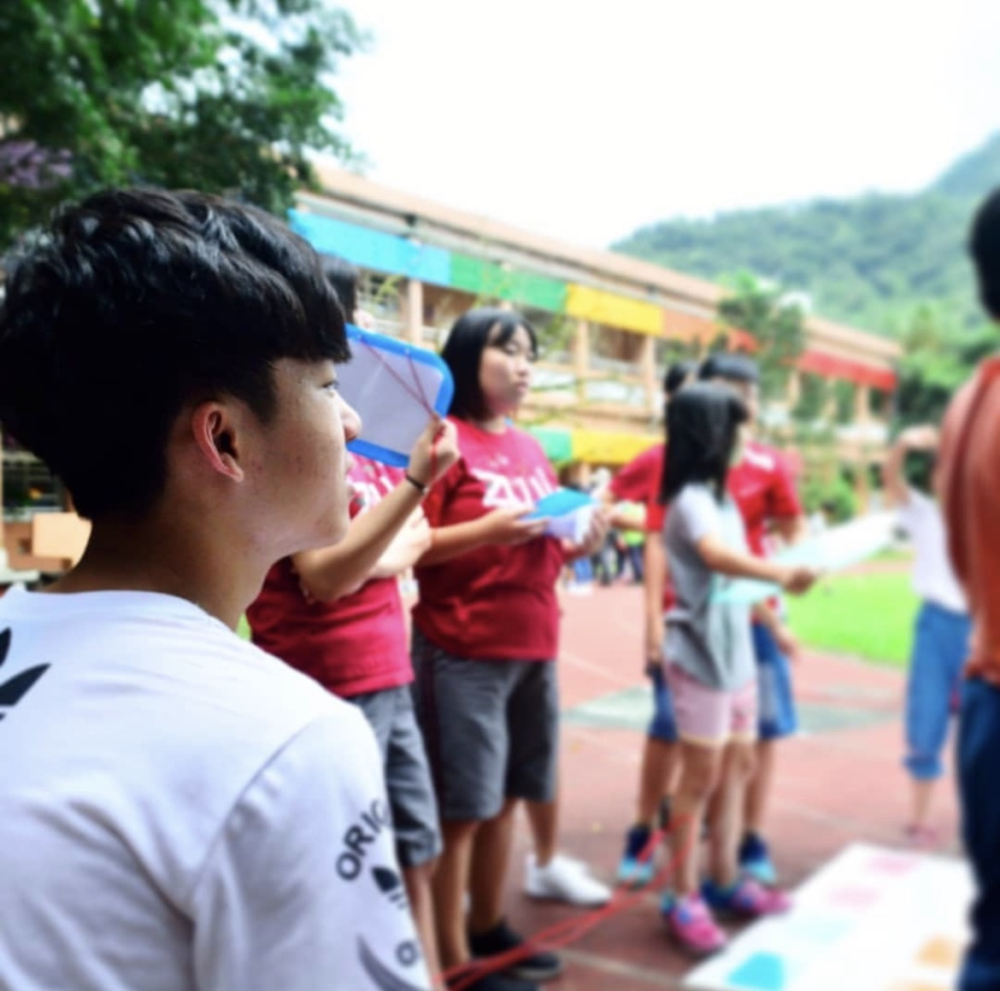
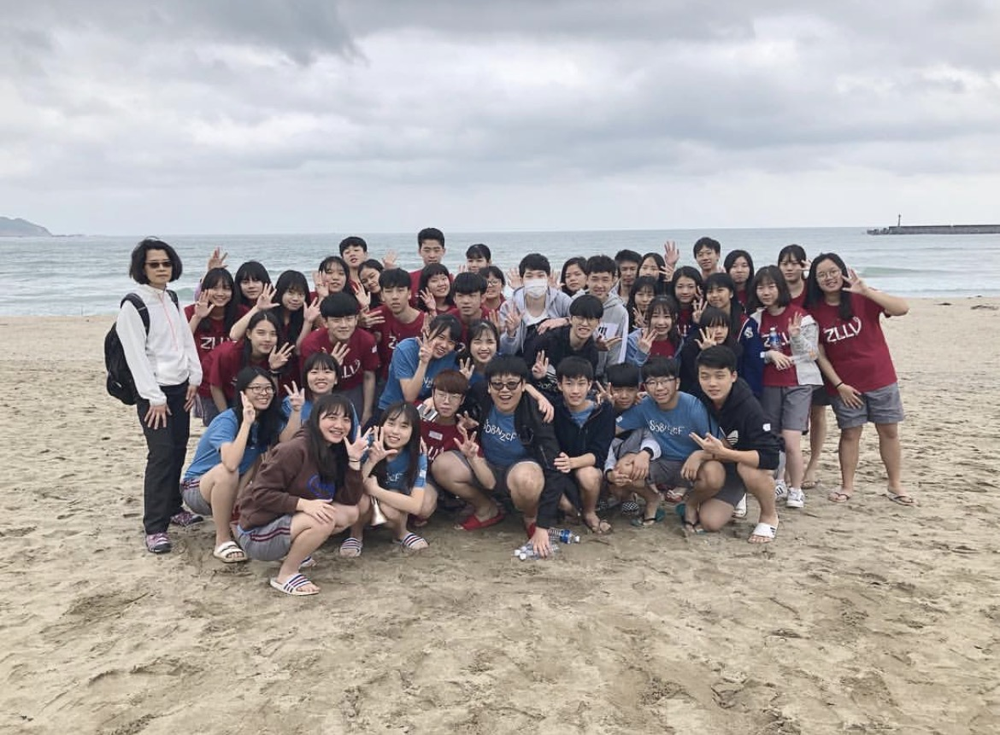

About
Highly motivated and fueled by an active learning and growth mindset,
I see every challenge as a chance to create real impact.
Through software engineering at the Ministry of National Defense, AI R&D at ARDGE, and AI automation at Microsoft, I’ve actively sought out new skills, whether diving into advanced AI/NLP projects, earning multiple Microsoft certifications, or driving award-winning startup initiatives.
I enjoy working across disciplines and solving practical problems that make a real difference.
My goal is to bring this same energy, adaptability, and drive for continuous improvement to your team.

Carnegie Mellon University
I have belief that with great power comes great responsibility.
- Birthday: 25 Feb 2003
- City: Mountain View, CA
- Phone: (650)641-5822
- Degree: M.S in Software Engineer
- Age: 23
- Gmail: 5961timtim@gmail.com
- Github: https://github.com/1104030360
- Linkedin: www.linkedin.com/in/timmyyt
Inspired by Microsoft’s mission to empower every person and every organization on the planet to achieve more, I am committed to carrying this belief forward in everything I do. I hope to use my skills and experience to help others benefit from technology, making innovation more inclusive and impactful for all.
Experience Highlights
During my time at National Central University and Carnegie Mellon University, I have always valued learning by doing and working with others to solve real problems.
Rather than focusing only on grades, I care more about whether my skills can actually help people and make things better.
Here are some of the roles and experiences that shaped me:
- Software Engineer at Ministry of National Defense, Taiwan – Selected as the sole engineer for system development support at the Ministry of National Defense, after a competitive selection process across an 800-person battalion and 20+ top candidates from four military companies.
- AI Research and Development Engineer at ARDGE – Built FastAPI backends for two on-premises RAG applications, reducing Chinese transcription errors by approximately 15% in internal testing.
- AI & Automation Engineer Intern at Microsoft – Built AI-powered ticket triage and internal logistics automation with Flask, Azure OpenAI, AutoGen, FAISS/SQLite RAG, and SharePoint, processing 1,000+ tickets and saving 15+ hours of manual tracking per week.
- Business Analyst Intern at SoftBI – Enhancing e-banking product usability and reliability by testing, redesigning, and documenting solutions for Shin Kong Bank.
- Co-Founder & AI Engineer at ADAM Intelligence – Built a Flask-based multimodal AI backend for service-quality analysis and led pilot testing with 100+ participants, achieving a 95% satisfaction rate.
- Microsoft Campus Ambassador – Led a team to deliver Azure and Copilot campaigns, expanding our digital reach to more than 15,000 people.
- LinkedIn Campus Ambassador – Empowering 300+ students to enhance their LinkedIn profiles and communication skills through workshops and events.
- Core player on the MIS basketball team – Led my teammates through tough matches and learned the value of trust and teamwork.
- Public Relations Leader of the MIS Student Association – Organized major department events and built connections across the student body.
Through all of these experiences, I’ve grown into someone who enjoys facing challenges, learns new things on my own, and—most importantly—believes that technology is at its best when it’s used to help others and bring people together.
I hope to keep carrying this belief forward, using what I know to make a real, positive impact wherever I go.
Awards & Honors
- Best AI Award, Ministry of Economic Affairs (MOEA), Taiwan | Honorable Mention, AI Application Category | May 2025
- U-Start Innovation and Entrepreneurship Program, Ministry of Education (MOE), Taiwan | Phase 1 Grantee | Apr 2025
- Taiwan Digital Innovation Awards, MOEA, Taiwan | Silver Prize | Nov 2024
- Microsoft Global Hackathon | Honorable Mention | Nov 2024
- Tech New Stars – Technology Rising Stars Competition, Ministry of Economic Affairs, Taiwan | Finalist | Aug 2024
- Rising Startup Competition, NCU, Industry-Academia Operation Center | Potential Excellence Award | July 2024
- Cross‑Strait Youth Innovation & Entrepreneurship Competition, Taiwan Affairs Office of the State Council | Finalist | July 2024
- Taoyuan City New Generation Youth Urban Forum Startup Proposal Competition, Youth Co‑Creating Association | 1st Place | Apr 2023
- Practical Simulation Learning Platform for College Entrepreneurship (SOS-IPO), Ministry of Education, Taiwan | Selected Team | Feb 2023
- Entrepreneurship Startup Arena Competition Practical, Ministry of Education, Taiwan | Selected Team
Patent
- Automatic Shoe Cover Dispenser (鞋套裝置) | Patent No. TWM653935U | Issued: Apr 11, 2024
Certifications & Training
- Linear Algebra from Elementary to Advanced | Coursera, Johns Hopkins University | Sep 2025
- Data Structure | Coursera, University of California San Diego | Sep 2025
- Guinness World Record: Online AI Lesson | Microsoft | Apr 2025
- M365 Copilot Agent Pioneer | Microsoft | Apr 2025
- Microsoft Global Hackathon 2024 Honorable Mention | Microsoft | Nov 2024
- Microsoft Global Hackathon 2024 | Microsoft | Aug 2024
- Microsoft Certified: Azure Data Fundamentals | Microsoft | Mar 2024
- Microsoft Certified: Azure AI Fundamentals | Microsoft | Feb 2024
- Microsoft Certified: Azure Fundamentals | Microsoft | Feb 2024
- Google Analytics Individual Qualification | Google | Feb 2024
Volunteer Experience
-

Volunteer Team Group Photo
New Taipei City, TaiwanWe took this group photo at the end of our service trip. Looking back, I feel grateful for the chance to work alongside so many passionate people. The teamwork and energy from everyone made the whole experience really memorable.
-

Art Workshop with Kids – Hualien Service
Hualien, TaiwanTaught the kids how to draw self-portraits. We sat together sketching and coloring, and one of the kids even drew a portrait of me and gave it to me as a gift. Seeing him smile and proudly hold up the picture honestly made my day.
-

Team-Building Activities – New Taipei Rural Service
New Taipei City, TaiwanHelped organize team activities for the children, using games as a way to build teamwork and confidence. Through playing together, I saw many kids become more outgoing and willing to try new things.
-

Sports and Dodgeball – Hualien Rural Service
Hualien, TaiwanPlayed dodgeball and other sports with local kids. It was great to see everyone running around, having fun, and working together as a team. The energy and smiles made it a memorable afternoon for all of us.
-

Group Recreation Leader – Hualien Rural Service
Hualien, TaiwanLed recreational games and activities for local children. We played team games, did crafts, and spent time sharing stories together. It was fun seeing the kids open up, laugh, and make new friends through simple group activities.
-

Beach Cleanup Activity
Northern Coast, TaiwanJoined friends and other volunteers to pick up trash along the beach. We spent the day clearing plastic bottles, fishing nets, and other debris from the shore. It felt good to do something simple but meaningful, and I was surprised by how much waste we collected together. This experience made me pay more attention to the environment in my daily life.
Experience
Awards & Honors
Certificates
Patent
Skills
Programming
Backend & Web
Databases & Retrieval
AI & Orchestration
Infrastructure & Testing
Resume
EDUCATIONAL BACKGROUND
CHUN-TING LIN
Software engineer focused on backend systems, AI orchestration, and reliable developer tooling.
- Carnegie Mellon University - Master of Science in Software Engineering, Expected Dec 2027
- National Central University - Bachelor of Business Administration in Information Management, Sep 2021 – Jun 2025
Honor for Academic Excellence (Ranked 1st of 119 students, Fall 2024) - Mountain View, CA
- (650) 641-5822
- 5961timtim@gmail.com
PROJECTS
Systograph
Apr 2026 – Present
- Built a read-only, local-first Python scanner that extracts production-readiness evidence from source code, configurations, dependencies, and Docker assets without sending source code to external LLMs.
- Generated interactive architecture maps of existing RAG and AI-agent systems, helping developers trace components, dependencies, and data flows.
- Developed a shared core engine for CLI, FastAPI, and React, validated across 12 RAG fixtures with 1,000+ automated tests, an 85% coverage gate, secret masking, and path-safety checks.
Service Desk RAG & Ticket Analytics
Sep 2025 – Present
- Built a Flask-based service-desk RAG platform for ticket scoring, clustering, and chat using LangGraph, LangChain integrations, Ollama, and PostgreSQL/pgvector, processing 500 tickets in under 10 minutes.
- Designed an asynchronous ticket pipeline for upload, extraction, embedding, clustering, and export using leased jobs across Dockerized app, worker, and PostgreSQL services.
PROFESSIONAL EXPERIENCE
Software Engineer
Apr 2026 – May 2026
Ministry of National Defense, Taiwan
- Built and refactored 15+ Django REST Framework API endpoints for a disaster response platform, moving complex business logic into a service layer and expanding unit and integration testing.
- Designed hierarchy-aware authorization for mission and resource subtrees, using atomic transactions and validation controls to prevent unauthorized access and inconsistent updates.
AI Research and Development Engineer
Sep 2025 – Feb 2026
ARDGE
- Built FastAPI backends for two on-premises RAG applications integrating faster-whisper and local LLMs/VLMs, reducing Chinese transcription errors by approximately 15% in internal testing.
- Architected a PostgreSQL-backed configuration service with 10+ REST API endpoints and encrypted credential storage, enabling runtime configuration updates without service restarts.
- Hardened workers with health checks and SIGTERM-based graceful shutdown, improving reliability during container restarts and worker scaling.
Co-Founder & AI Engineer
Mar 2023 – Dec 2025
ADAM Intelligence
- Built a Flask-based multimodal AI backend combining facial, voice, and text analysis to score customer–staff interactions and generate service-quality insights.
- Led anonymous pilot testing with 100+ participants, achieving a 95% satisfaction rate for the generated analysis reports.
AI & Automation Engineer Intern
Jul 2024 – Aug 2025
Microsoft
- Built a Flask NLP system integrating Azure OpenAI GPT inference to score risk and categorize 1,000+ IT tickets in under 20 minutes across three Microsoft Taipei sites.
- Designed AutoGen multi-agent orchestration with tool routing and FAISS/SQLite RAG to retrieve historical cases, generate multi-step fixes, and expose triage APIs for pre-escalation review.
- Built and launched an internal logistics operations platform on SharePoint, using Office Scripts to automate ETL workflows across 10+ Greater China sites and save 15+ hours of manual tracking per week.


{kind=link}
{kind=link}
{kind=link}
{kind=link}
{kind=link}
{kind=link}
{kind=link}
{kind=link}
Hands-on Experience
Here are some hands-on experiences with the following programming languages
Systograph (Python, FastAPI, React)
Built a read-only, local-first Python scanner with shared CLI, FastAPI, and React interfaces, validated across 12 RAG fixtures with 1,000+ automated tests and an 85% coverage gate.
Library System (Java, Vue, Flask)
Built a containerized AI-powered library platform with a Java API, Vue and TypeScript frontend, Flask and Ollama Q&A service, and real-time WebSocket recommendations.
Service Desk RAG & Ticket Analytics
Built a Flask-based service-desk RAG platform with LangGraph, Ollama, and PostgreSQL/pgvector, processing 500 tickets in under 10 minutes through an asynchronous Dockerized pipeline.
Others' impressions about me
Let's take a look at what other people think about me!
Timmy never gives up. He tries to solve the problem with several approaches!

Kevin Kuan
NCU MIS Student
Timmy is a responsible person, he can properly handle everything and help other people.

Jenny Wu
NCU MIS Student
Timmy has connections, he is the life of the party, I have a good time with him.